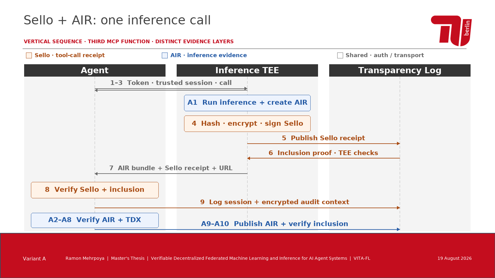
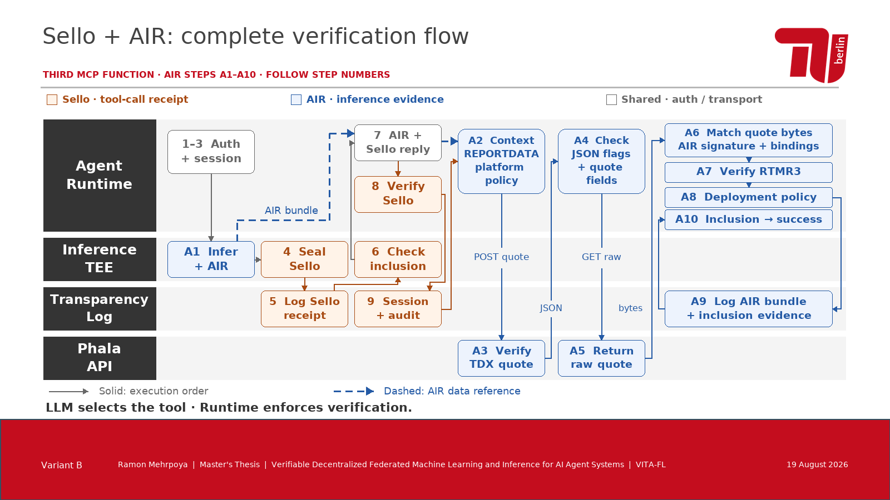
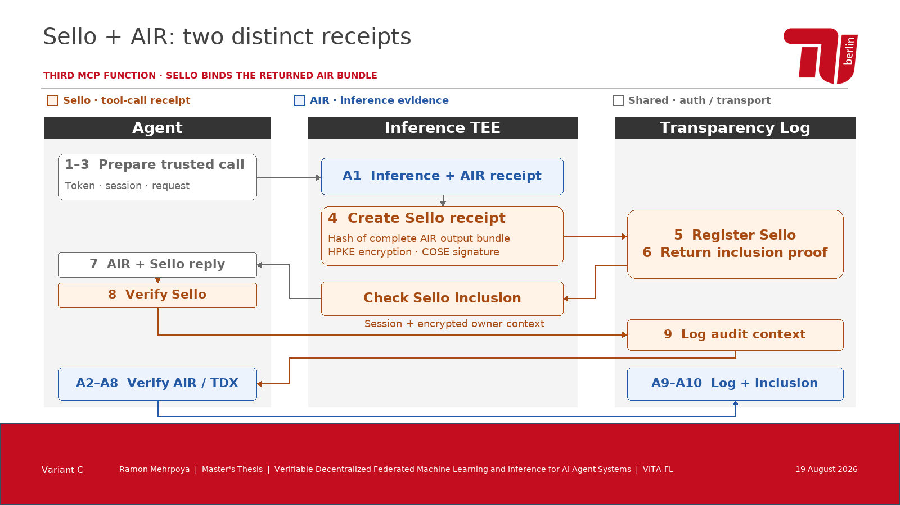

Sello + AIR: zwei Nachweisschichten
Variante B erweitert Agent Runtime, Inference TEE und Transparency Log um die Phala API. B zeigt die AIR-Schritte A1–A10 einzeln; A/C fassen sie mit denselben Nummernbereichen zusammen. Alle Entwürfe zeigen den dritten MCP-Aufruf: Inferenz mit Sello und AIR. Dunkelorange = Sello, Dunkelblau = AIR, Grau = gemeinsame Autorisierung und Transport. Eine Legende steht auf jeder Folie. Die Diagramme sind editierbare PowerPoint-Elemente.
Alle Varianten · PowerPoint · Vereinfachte Kopie · Detail + vereinfachte Folie · PDF · Übersicht
A · Vertikales Sequenzdiagramm
Die genaue Reihenfolge und jede Übergabe zwischen den drei Akteuren.

Editierbare Einzelfolie · Große Vorschau
B · Horizontale Rollenbahnen
Vollständiger Ablauf A1–A10: zwei Phala-API-Rundwege, lokale Prüfungen und abschließende Log-Inclusion.

Editierbare Einzelfolie · Große Vorschau
C · Zwei Belege im Zusammenspiel
Drei Bereiche mit getrennten AIR- und Sello-Belegen sowie zwei Publikationswegen.

Editierbare Einzelfolie · Große Vorschau